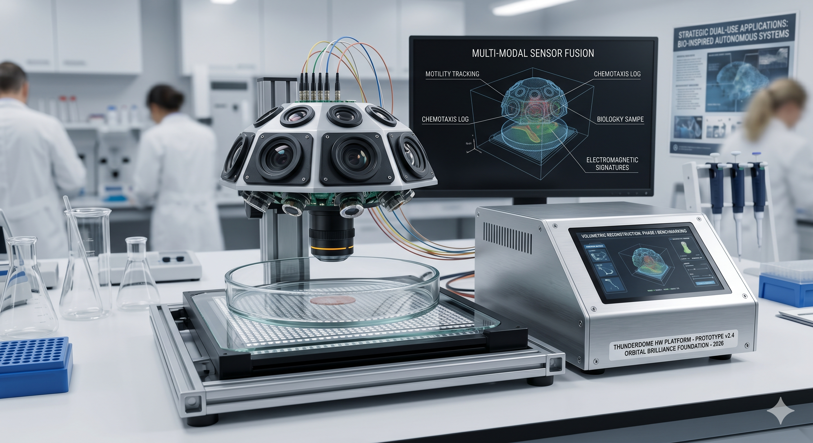

Strategic White Paper | Proposal
Project Thunderdome: Advanced Bio-Encoding & Behavioral Informatics
A Proposed Strategic Initiative for Dual-Use Biological Digitization
Executive Summary
The modern landscape of biological research and biodefense is constrained by an "observation gap." While genomics has progressed, the high-fidelity modeling of biological movement, chemotaxis, and environmental interaction remains largely qualitative.
The Thunderdome Initiative is a proposed high-speed, volumetric HDR light-field platform designed to transform biological activity into quantifiable, multi-modal data. By encoding the behavioral dynamics of micro-fauna and near-fungal entities, this initiative seeks to provide critical infrastructure for bio-inspired autonomous robotics and the rigorous classification of anomalous biological threats.
The Thunderdome Hardware Architecture
The Thunderdome hardware stack is designed to bridge the gap between microscopic observation and actionable data.

Volumetric Light-Field Sensing
Enables 3D reconstruction of movement paths without the need for fluorescent markers, preserving the natural state of the specimen.
Multi-Modal Sensor Fusion
Synchronized capture of motility, photoluminescence, and electromagnetic signatures in a controlled environmental stage.
Strategic Dual-Use Applications
The initiative is designed to provide high-value data for two primary, dual-use sectors:
1. Bio-Inspired Autonomous Systems
The trajectory and swarm-behavior data derived from Thunderdome acts as a foundational training set for micro-robotic drones. By mapping the efficiency of biological evasion and navigation, we provide reinforcement learning (RL) agents with the "ground truth" required to excel in resource-constrained environments.
2. Biodefense & Anomalous Characterization
The platform provides an empirical, objective baseline for identifying anomalous pathogens. By comparing unknown biological samples against our verified library of "known" taxonomies, we can categorize anomalous behavior with quantifiable precision.
Proposed Operational Roadmap
The initiative is planned to follow a three-phase deployment trajectory:
- Months 0–3 (Formation): Formalization of non-profit entity for ethical oversight and initial IP filings. Prototype refinement and benchmark definition.
- Months 3–12 (Benchmarking): Validation of platform fidelity against Drosophila melanogaster and standard environmental micro-organisms to establish empirical performance standards.
- Months 12–24 (Scaling): Potential formation of a Delaware Public Benefit Corporation (PBC) to manage commercial scaling, government contracting, and deployment of modular units to partner labs.
Proposed Governance Framework
To maximize public trust and operational efficiency, we propose a dual-entity governance model to be established as the initiative matures:
The Foundation (Proposed Non-Profit)
Dedicated to ethics, patient-advocacy integration, and fostering open-science collaboration for public-interest research.
The Enterprise (Proposed Delaware PBC)
Intended to serve as the primary contracting engine for government solicitations, high-end hardware production, and proprietary data-licensing agreements.